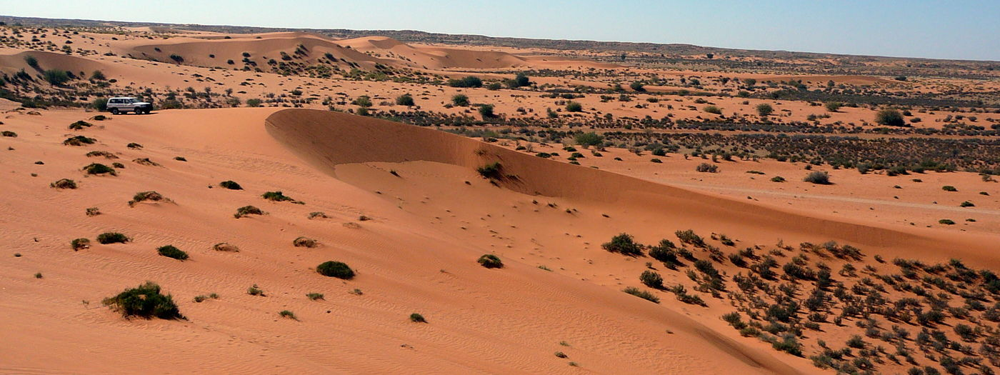

Climate of Congo Basin Send keyboard focus to media The Congo Basin has high temperatures, high humidity, and large amounts of rainfall throughout the whole year. With the equator running through the country, the Congo Basin climate is warm and humid. There are two main season; one long rainy season, and one dry season with slightly less rain. The rainy season usually begins in the first half of March, and the dry season usually beings in November. It rains about 117 days per year, with a total of approximately 1,766 mm of rainfall.
Temperatures are fairly stable with little change between seasons, the greatest temperature between day and night usually averaging a change of 15° C. Temperatures range between 20° and 27° C Near some river tributaries, the area cools to as low as 12° C Humidity averages around 80 – 90 percent Soil of the Congo Basin The area is heavily coarse grained soils. About 60% contains sand and gravel, with the lower lying areas having a high level of iron and aluminum oxides. The soils are rich and heavy, as organic matter decomposes rapidly because of the hot and humid climate, and also topsoil is washed away regularly by rains.